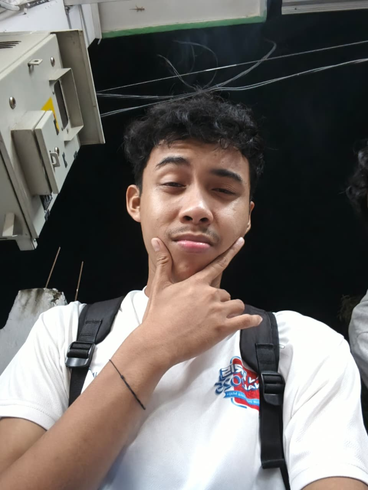

My Profille
Daenul Ashari
Ntb Lombok Utara Tanjung
0987654321
daenul@gmail.com
Saya adalah salah satu mahasiswa di Universitas Teknologi Mataram, Homebase saya adalah Sistem Informasi.......
Baca Selengkapnya →
